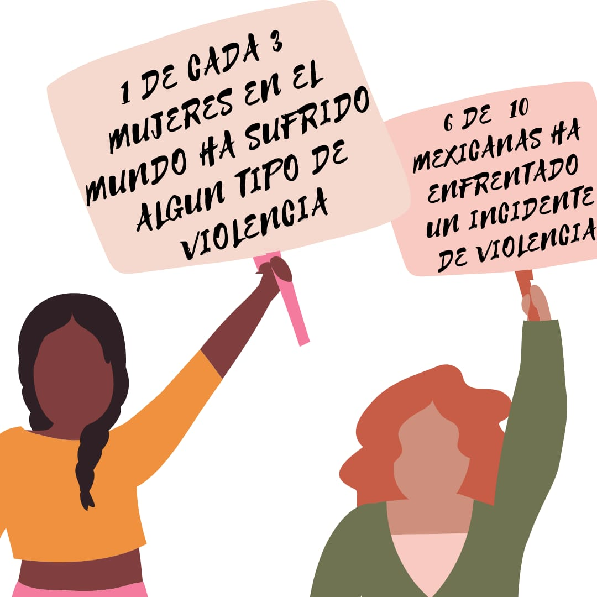
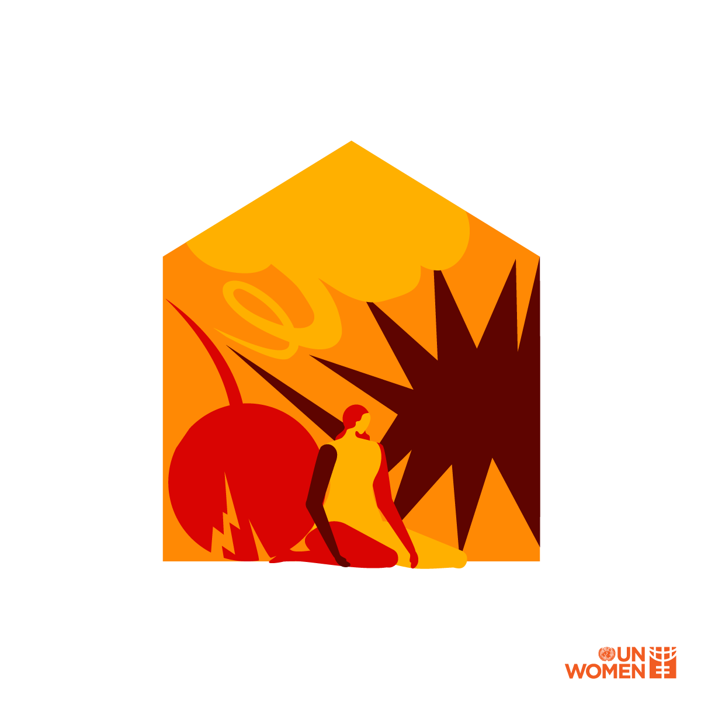
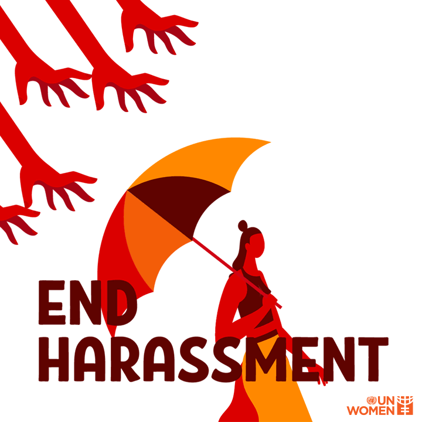
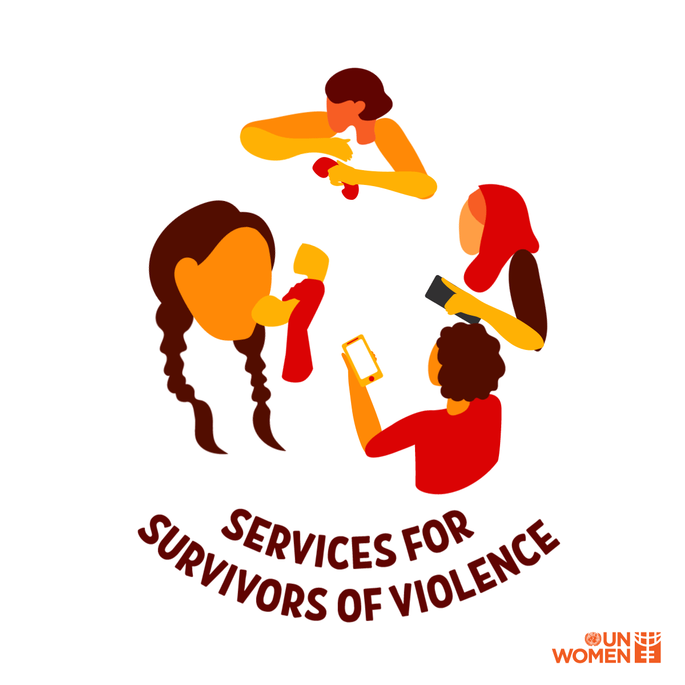

Violencia contra la mujer

Cada 25 de noviembre, desde 1981, nos recuerda que gobiernos, organizaciones
internacionales, ONG y sociedad en general aún tenemos mucho por hacer para
eliminar la violencia contra la mujer. La violencia de género es la manifestación más
clara de la desigualdad entre hombres y mujeres, y la más grave violación de los
derechos humanos que sufren millones de mujeres, niñas y jóvenes.
Las Naciones Unidas definen la violencia contra la mujer como «todo acto de
violencia de género que resulte, o pueda tener como resultado un daño físico, sexual
o psicológico para la mujer, inclusive las amenazas de tales actos, la coacción o la
privación arbitraria de libertad, tanto si se producen en la vida pública como en la
privada»
En el mundo, 1 de cada 3 mujeres ha sufrido violencia física o sexual, en la mayoría de
los casos perpetrada por alguien de su entorno, principalmente parejas o ex parejas.
Casi 750 millones de niñas y mujeres menores se casaron antes de cumplir los 18 años.
Al menos 200 millones han sido víctimas de la mutilación genital femenina. El 71% de
las víctimas de trata son mujeres y niñas, 3 de cada 4 son explotadas sexualmente.
Las mujeres ocupan tan sólo el 24% de los escaños en los parlamentos del mundo y la
brecha salarial de género se sitúa en el 23%. En México, al menos 6 de cada 10
mujeres mexicanas ha enfrentado un incidente de violencia; 41.3% de las mujeres ha
sido víctima de violencia sexual y, en su forma más extrema, 9 mujeres son asesinadas
al día
Tipos de violencia
Es imprescindible conocer y reconocer qué tipos de violencia existen en
nuestras sociedades para poder combatirlos. Teniendo en cuenta que no existe
un maltrato peor que otro, pues todos surgen de la discriminación y terminan
en la violencia física, la opresión y hasta la muerte.
Entre las formas de violencia más común están:
Violencia económica
Consiste en lograr o intentar conseguir la dependencia financiera de otra persona,
manteniendo para ello un control total sobre sus recursos financieros, impidiéndole
acceder a ellos y prohibiéndole trabajar o asistir a la escuela.

Violencia psicológica
Consiste en provocar miedo a través de la intimidación; en amenazar con causar
daño físico a una persona, su pareja o sus hijas o hijos, o con destruir sus mascotas y
bienes; en someter a una persona a maltrato psicológico o en forzarla a aislarse de sus
amistades, de su familia, de la escuela o del trabajo
Violencia emocional
Consiste, por ejemplo, en minar la autoestima de una persona a través de críticas
constantes, en infravalorar sus capacidades, insultarla o someterla a otros tipos de
abuso verbal; en dañar la relación de una pareja con sus hijas o hijos; o en no permitir
a la pareja ver a su familia ni a sus amistades.
Violencia física
Consiste en causar o intentar causar daño a una pareja golpeándola, propinándole
patadas, quemándola, agarrándola, pellizcándola, empujándola, dándole bofetadas,
tirándole del cabello, mordiéndole, denegándole atención médica u obligándola a
consumir alcohol o drogas, así como empleando cualquier otro tipo de fuerza física
contra ella. Puede incluir daños a la propiedad.
Violencia sexual
Se entiende por violencia sexual cualquier acto de naturaleza sexual cometido contra
la voluntad de otra persona, ya sea que esta no haya otorgado su consentimiento o
que no lo pueda otorgar por ser menor de edad, sufrir una discapacidad mental o
encontrarse gravemente intoxicada o inconsciente por efecto del alcohol o las drogas.
La violencia sexual puede incluir:
-Acoso sexual.El acoso sexual abarca el contacto físico no consensuado, por ejemplo,
cuando una persona agarra, pellizca, propina bofetadas o realiza tocamientos de
índole sexual a otra persona. Incluye también otros tipos de violencia no física, como
abucheos, comentarios sexuales sobre el cuerpo o el aspecto de una persona, la
solicitud de favores sexuales, miradas sexualmente sugerentes, acecho o exhibición de
órganos sexuales.

-Violación.La violación es cualquier penetración vaginal, anal u oral no consentida
por parte de otra persona utilizando cualquier parte del cuerpo o un objeto. Puede
ser una persona conocida o no por la sobreiviente, ocurrir dentro del matrimonio y de
una relación de pareja, así como durante un conflicto armado.
-Violación correctiva.Forma de violación perpetrada contra una persona por su
orientación sexual o su identidad de género. Su finalidad es obligar a la víctima a
comportarse de manera heterosexual o acorde con una determinada visión
normativa de la identidad de género.
-Cultura de la violación.La cultura de la violación es el entorno social que permite
normalizar y justificar la violencia sexual. Tiene su origen en el patriarcado y se
alimenta de unas desigualdades y sesgos persistentes en lo que concierne al género y
la sexualidad.
Trata de personas
Adquisición y explotación de personas utilizando medios tales como la fuerza, el
fraude, la coacción o el engaño. Este atroz delito atrapa a millones de mujeres y niñas
en todo el mundo, muchas de las cuales padecen explotación sexual.
Mutilación genital femenina
La mutilación genital femenina (MGF) incluye procedimientos destinados a alterar de
manera intencionada o causar daños en los órganos genitales femeninos por razones
no médicas. Se clasifica en cuatro grandes tipos, y tanto la práctica como las
motivaciones que subyacen a ella varían según los lugares. La MGF es una norma
social, a menudo considerada como un paso necesario para preparar a las niñas para
la madurez y el matrimonio. Por lo general se debe a creencias asociadas al género y
a su relación con una “expresión sexual adecuada”. Se clasificó por primera vez como
violencia en 1997 a través de una declaración conjunta de la OMS, el UNICEF y el
UNFPA.

Matrimonio infantil
Cualquier matrimonio en el que uno o ambos cónyuges sean menores de 18 años.
Constituye una violación de la Declaración Universal de Derechos Humanos, que
establece que “[sólo] mediante libre y pleno consentimiento de los futuros esposos
podrá contraerse el matrimonio”. Las niñas tienen una probabilidad mayor que los
niños de casarse siendo menores de edad y, por tanto, de abandonar la escuela y
experimentar otras formas de violencia.
Violencia en línea o digita
La violencia en línea o digital contra las mujeres es cualquier acto de violencia
cometido, asistido o agravado por el uso de la tecnología de la información y las
comunicaciones (teléfonos móviles, Internet, medios sociales, videojuegos, mensajes de
texto, correos electrónicos, etc.) contra una mujer por el hecho de serlo.
La violencia en línea puede incluir:
-Ciberacoso.Consiste en el envío de mensajes intimidatorios o amenazantes.
-Sexteo o sexting. Envío de mensajes o fotos de contenido explícito sin contar con la
autorización de la persona destinataria.
-Doxing. Publicación de información privada o identificativa sobre la víctima.